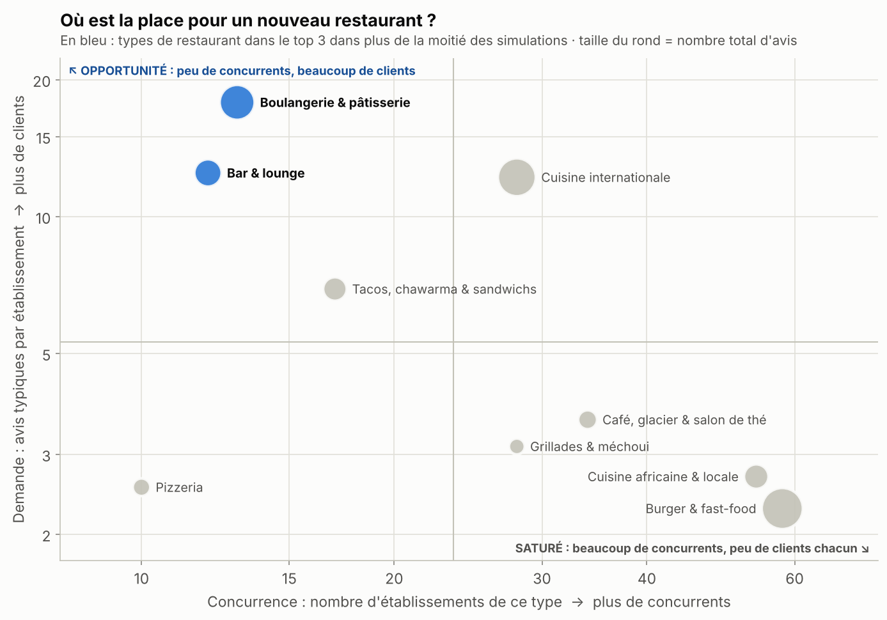
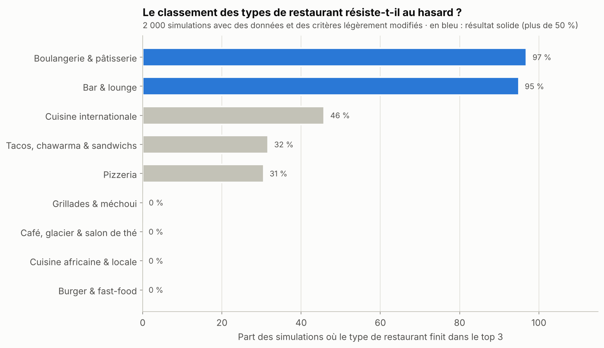
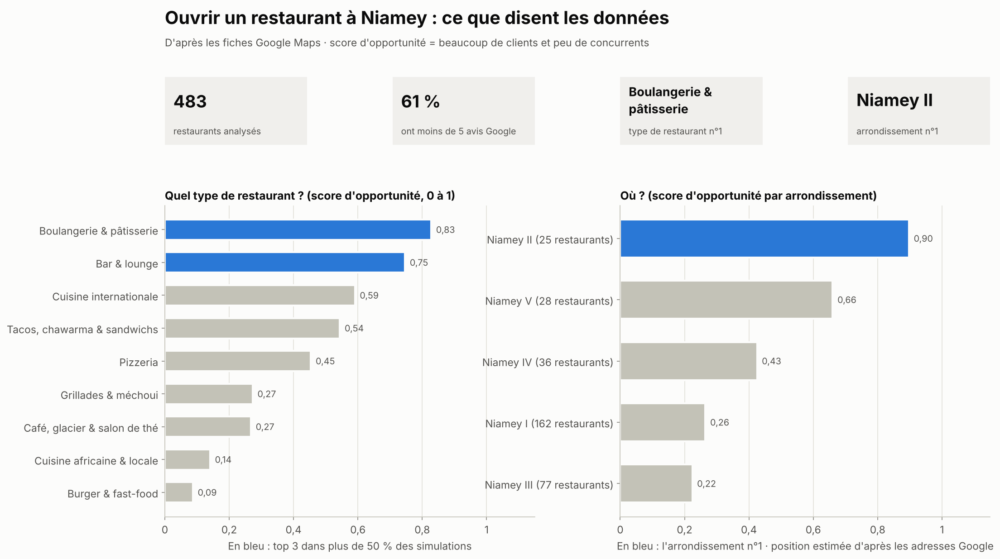

Analyse de données · Niamey (Niger)
Quel restaurant ouvrir à Niamey, et où ?
Analyse de 490 fiches Google Maps : types de restaurants, notes corrigées, pôles de restauration et un score d'opportunité testé par 2 000 simulations.
Ce que disent les données
- 483 restaurants analysés (sur 490 fiches Google Maps, après suppression des doublons et des commerces qui ne sont pas des restaurants).
- 61 % des restaurants ont moins de 5 avis : la réputation en ligne reste très peu développée à Niamey. Seuls 127 restaurants (26 %) ont une note vraiment solide (au moins 10 avis).
- 85 des 86 restaurants notés 5★ ont 5 avis ou moins. C'est pourquoi on utilise une note corrigée, qui ne se laisse pas impressionner par 1 ou 2 avis.
- Aucun type de cuisine n'est mieux noté qu'un autre de façon fiable (p = 0,35). Ce qui distingue les concepts, c'est la demande (clients par établissement) et la concurrence.
- Concepts les plus prometteurs : Boulangerie & pâtisserie (13 établissements, 17,8 avis typiques chacun, top 3 dans 97 % des simulations) ; Bar & lounge (12 établissements, 12,5 avis typiques chacun, top 3 dans 95 % des simulations). À comparer avec 3,7 avis pour un restaurant généraliste.
- Concepts saturés : Burger & fast-food et Cuisine africaine & locale — 58 établissements, seulement 2,3 avis chacun ; 54 établissements, seulement 2,7 avis chacun.
- Où ? 47 % des restaurants localisés sont concentrés dans 2 pôles. Dans le pôle Château 1 · Issa Béri (82 restaurants), chaque restaurant attire 6,7 avis typiques, contre 2,6 dans le pôle Dangawo · Terminus (71 restaurants), soit 2,5× moins de clients par restaurant dans ce dernier. Par arrondissement, Niamey II arrive en tête (n°1 dans 79 % des simulations).
- Un site web va de pair avec 8× plus d'avis (médiane 15,5 contre 2,0, p < 0,001), mais pas avec une meilleure note (p = 0,11) : c'est un levier de visibilité, pas de qualité.
Pistes concrètes : quel type, à quel endroit ?
- Boulangerie & pâtisserie dans le pôle Château 1 · Issa Béri : aucun établissement de ce type parmi 82 restaurants (4 460 avis au total).
- Bar & lounge dans le pôle Château 1 · Issa Béri : 1 seul établissement de ce type parmi 82 restaurants (4 460 avis au total).
- Bar & lounge dans le pôle Dangawo · Terminus : aucun établissement de ce type parmi 71 restaurants (2 244 avis au total).
⚠️ Les données proviennent d'une extraction Google Maps centrée sur les restaurants : les boulangeries, bars ou cafés qui ne sont pas référencés comme restaurants y sont probablement sous-représentés, et leur concurrence réelle est donc sous-estimée. Avant d'investir, il faut compter la concurrence réelle sur le terrain — ces résultats indiquent des pistes, pas des certitudes.
La carte
Chaque point est un restaurant ; cliquez dessus pour voir sa fiche. Le bouton « calques », en haut à droite de la carte, permet de n'afficher qu'un type de restaurant. Ouvrir la carte en plein écran.
En images



Comment c'est fait
- 📥 CollecterExport Google Maps : nom, type, note, nombre d'avis et adresse de chaque établissement.
- 🧹 Nettoyer et classerDoublons et commerces non-restaurants retirés ; type de restaurant deviné à partir du nom (« Pizza Club » → pizzeria).
- ⭐ Corriger les notesChaque restaurant reçoit 10 avis « moyens » fictifs : un 5★ obtenu avec un seul avis ne fausse plus les classements.
- 🗺️ Placer sur la cartePlus Codes convertis en coordonnées ; un pôle = au moins 4 restaurants à moins de 500 m.
- 🎯 ComparerScore d'opportunité : clients par établissement (45 %), peu de concurrents (35 %), marge de progression (20 %).
- ✅ Vérifier2 000 simulations : un résultat est jugé robuste s'il reste dans le top 3 plus d'une fois sur deux.